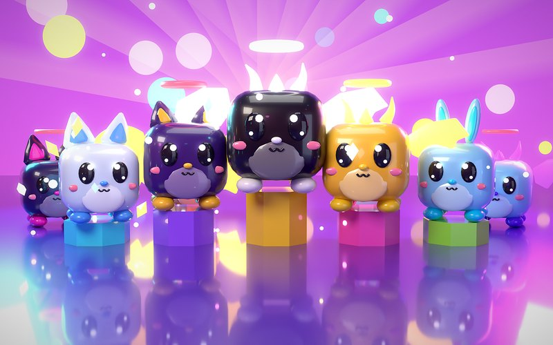
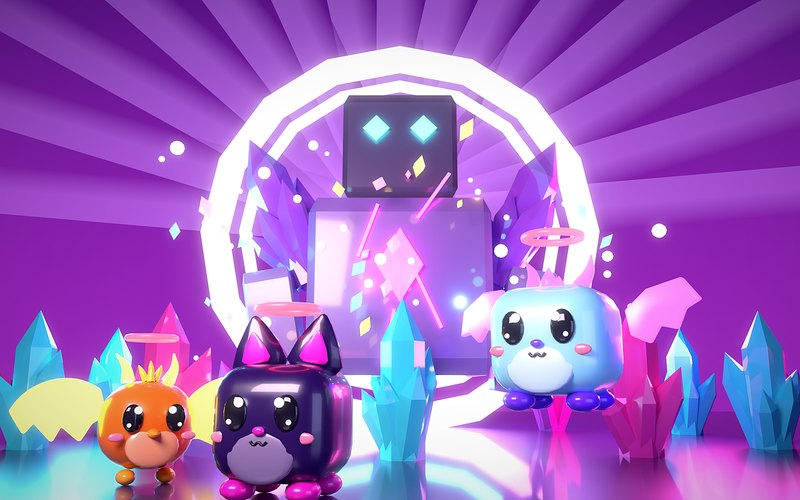
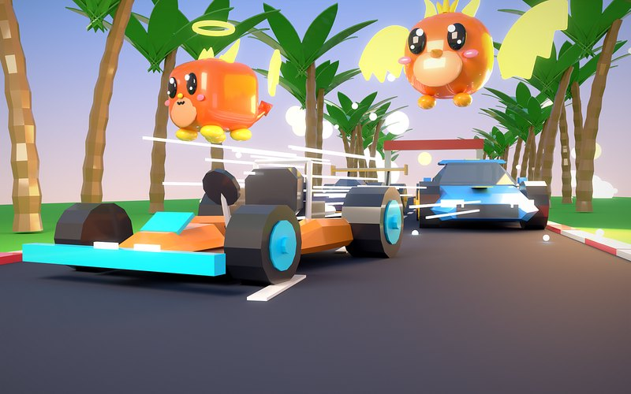

Spiele — 2026
Rift Rush
Ein veröffentlichtes Roblox-Spiel: im Takt trainieren, Pets aus Eiern schlüpfen lassen, eine 60-Kilometer-Strecke fahren. Server-Logik, Speicherstand, Welt und Figuren sind selbst umgesetzt.

Überblick
Rift Rush ist ein Speed-Simulator. Man trainiert auf Laufbändern im Rhythmus, steigert sich über Rebirths und Ascensions, lässt Pets aus Eiern schlüpfen und fährt mit sechs Fahrzeugen eine 60-Kilometer-Strecke. Dazu kommen Raids gegen einen Boss, Runen, Expeditionen und ein wechselndes Rift-Wetter. Sechs Inseln bilden die Welt.
Die Aufgabe
Speed-Simulatoren leben von Fortschritt, der sich gut anfühlt, und von Glück, das schnell ins Unfaire kippt. Auf Roblox ist Glücksspiel mit Einsatz verboten, auch mit Spielgegenständen. Ein Spiel muss also spannend bleiben, ohne dass Spieler etwas riskieren, das sie schon haben.
Der Ansatz
Das bekannte Gerüst, darauf eigene Systeme: Training im Takt, bei dem ein perfekter Schritt doppelten Speed gibt, Pets mit Rollen und Ausrüstung, eine lange Rennstrecke mit Pokal-Toren. Glück kostet nie etwas, das man schon besitzt, und alle Quoten stehen im Spiel.
Das System
Geschrieben in Luau: 99 Module mit rund 18.900 Zeilen, gezählt am 04.10.2026. Leitregel ist, dass der Server alles entscheidet und der Client nur Absichten schickt. Pets, Eier, Zonen und Stationen stehen als Datentabellen, nicht im Code. Der Quelltext liegt über Rojo in Git, ein Python-Skript baut die Welt jederzeit neu in den Place. Pets, Fahrzeuge und Inseln entstehen in Blender aus einem eigenen Baukasten, ebenso Symbol und Titelbilder. Die Titelbilder sind Cycles-Renderings mit Randlichtern, Spiegelboden und Tiefenunschärfe, danach folgt eine Nachbearbeitung mit Glühen, Vignette und Farbkorrektur in Python.
Das Ergebnis
Veröffentlicht seit dem 27.09.2026. Offline-Tests und eine Balance-Simulation rechnen den Fortschritt durch, bevor sich Zahlen im Spiel ändern; die Simulation hat ein zu langsames Ascension-Tempo aufgedeckt, das daraufhin korrigiert wurde. Eine Spielerschaft gibt es noch nicht, das Projekt zeigt die Technik.

Rift-Raids: Tore zerstören und einen Boss besiegen. Gerendert in Blender mit Cycles, Randlichtern, Spiegelboden und Tiefenunschärfe.

Rennen auf der 60-Kilometer-Strecke bei tiefstehender Sonne, gerendert in Blender mit Cycles.